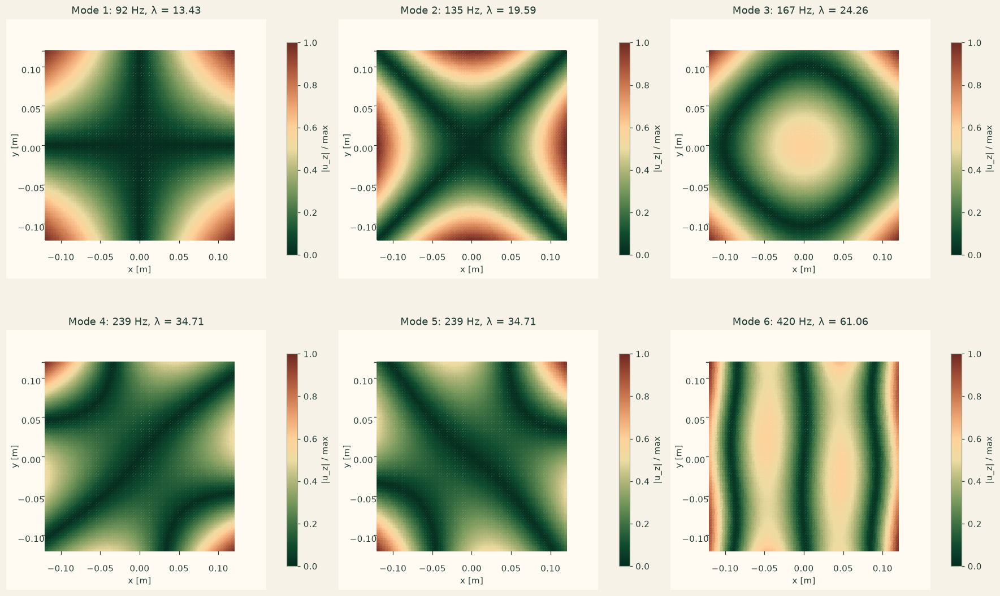
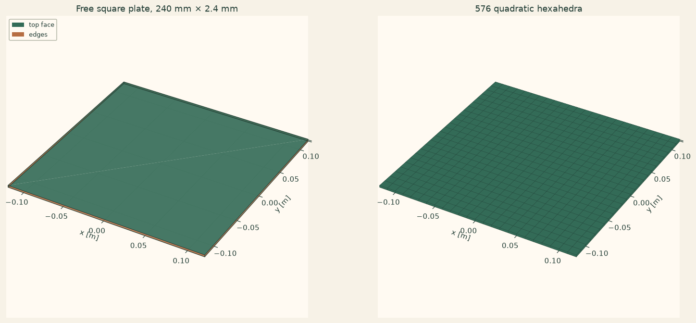

Docs › Examples › Chladni figures of a free square plate
Structural dynamics · 3D
Chladni figures of a free square plate
A thin square brass plate, free on all edges, vibrates in its natural modes; the nodal lines are the sand figures that Chladni made visible with a violin bow.
Run locally with OneSimulation. The example downloads are free. Running them requires an activated runtime. Runtime Alpha 0.2.1a7 · CPython 3.13 on macOS (Apple Silicon), Ubuntu 22.04 (x86-64), and Windows x64. Installation and activation · View pilot plans. Scope of the reference checks.

What it computes
OneSimulation reads the plate from a STEP file, meshes it with quadratic hexahedra and solves the natural modes of the free 3D elastic body on three meshes, keeping the six rigid-body modes apart. The script that builds the STEP file comes with the notebook.
What it checks
The frequency parameters of the six lowest elastic modes match Leissa's plate solution (13.468, 19.596, 24.270, 34.801, 34.801, 61.093) within 0.26 % on the finest mesh, including the degenerate pair.
Geometry
The notebook starts at the import of the CAD file chladni_plate_free_modes.step: STEP (AP242), readable by any CAD program, with the names of the faces that the boundary conditions use. Put it next to the notebook.

The geometry script
The script chladni_plate_free_modes_geometry.py builds the geometry with the CAD objects of OneSimulation and writes the file. Change a dimension there, run it, and run the notebook again.
"""Geometry of the OneSimulation example "Chladni figures of a free square plate".
Builds a square brass plate, 240 mm wide and 2.4 mm thick, with the CAD objects of OneSimulation and
writes chladni_plate_free_modes.step. The faces keep their names x_min, x_max, y_min, y_max, z_min
and z_max in the file.
"""
from onesim.cad.d3 import Box
plate = Box(length=0.240, width=0.240, height=0.0024, origin=(-0.120, -0.120, 0.0))
plate.save("chladni_plate_free_modes.step")The notebook
The complete notebook, cell by cell. Run it to produce the figures and the comparison printout.
Sand strewn on a metal plate that is excited at one of its natural frequencies gathers along the lines that do not move, the nodal lines of the mode. E.F.F. Chladni showed these figures in 1787 by bowing the edge of a plate; today a vibration exciter at the centre does the same. Each figure belongs to one natural frequency of the free plate.
The plate is computed as a 3D elastic body. The natural modes solve the generalised eigenvalue problem of the free structure,
with the stiffness \(\mathbf K\) and mass \(\mathbf M\) of the elastic solid. A free plate has six rigid-body modes at \(\omega=0\); they are kept apart and the elastic modes follow.
Setup. A square plate of side \(a=240\) mm and thickness \(h=2.4\) mm, \(E=100\) GPa, \(\nu=0.3\), \(\rho=8500\) kg/m³ (brass). All faces are free. The plate comes from the CAD file chladni_plate_free_modes.step, written by chladni_plate_free_modes_geometry.py with the CAD objects of OneSimulation.
| face | condition | |---|---| | all faces | free (traction-free) |
Reference. For a thin plate the natural frequencies scale as
where the frequency parameter \(\lambda\) depends only on the boundary conditions and on \(\nu\). For the completely free square plate with \(\nu=0.3\), A.W. Leissa (Vibration of Plates, NASA SP-160, 1969, Sec. 4.3.10) gives \(\lambda=13.468,\ 19.596,\ 24.270,\ 34.801,\ 34.801,\ 61.093\) for the six lowest modes. The fourth and fifth mode have the same frequency: the plate's symmetry pairs them, and any combination of the two is again a mode.
import numpy as np
from onesim.cad.exchange import load
from onesim.materials import IsotropicSolid
from onesim.meshing import CadHexahedralMesher
from onesim.numerics import Numerics
from onesim.numerics.fem import FiniteElement, Lagrange
from onesim.numerics.linear import SparseDirect, SparseSymmetricEigenSolver
from onesim.physics.solid_mechanics import (
LinearElasticity,
TractionFree,
structural_modes,
)
from onesim.simulation import Problem, Simulation
from onesim.visualization import plots, theme
theme.set()Geometry and mesh
load returns the plate with its named faces. Three hexahedral meshes with 12, 24 and 36 cells along each edge and one quadratic cell through the thickness, which carries the bending of a thin plate.
plate = load("chladni_plate_free_modes.step")
faces = plate.boundaries
side, thickness = plate.size[0], plate.size[2]
divisions = [12, 24, 36]
meshes = [CadHexahedralMesher(cells=(n, n, 1)).generate(plate) for n in divisions]
view = plots.Camera(elevation=35, azimuth=-60)
fig = plots.figure(1, 2, size=(14, 6))
plots.geometry(
plate,
selection={
"top face": faces.z_max,
"edges": faces.x_min | faces.x_max | faces.y_min | faces.y_max,
},
labels=False,
camera=view,
title="Free square plate, 240 mm × 2.4 mm",
ax=fig[0],
)
plots.mesh(
meshes[1],
groups=("all",),
legend=False,
camera=view,
title=f"{meshes[1].cell_count} quadratic hexahedra",
ax=fig[1],
)
plots.show()Model
LinearElasticity with the brass, no supports. structural_modes assembles stiffness and mass, keeps the six rigid-body modes apart (zero_eigenvalue_tolerance) and returns twelve modes in all.
youngs_modulus, poisson_ratio, density = 100e9, 0.30, 8500.0
brass = IsotropicSolid(
density=density,
specific_heat_capacity=380.0,
thermal_conductivity=110.0,
youngs_modulus=youngs_modulus,
poisson_ratio=poisson_ratio,
thermal_expansion_coefficient=19e-6,
)
model = LinearElasticity(domain=plate.volume, material=brass)
problem = Problem(
name="Free plate",
geometry=plate,
physics=(model,),
boundary_conditions=(TractionFree(boundary=faces.all, physics=model),),
)
numerics = Numerics(
spatial=FiniteElement(element=Lagrange(order=2)), linear_solver=SparseDirect()
)
results = [
Simulation(problem=problem, mesh=mesh, numerics=numerics).solve_stationary()
for mesh in meshes
]
modes = [
structural_modes(
result,
model,
mode_count=12,
target_frequency=0.0,
zero_eigenvalue_tolerance=1.0,
eigensolver=SparseSymmetricEigenSolver(tolerance=1e-10),
)
for result in results
]
order = [np.argsort(mode_set.frequencies) for mode_set in modes]
elastic = [
np.asarray(mode_set.frequencies)[index][6:] for mode_set, index in zip(modes, order)
]Comparison with the plate solution
The frequency parameter \(\lambda=2\pi f a^2\sqrt{\rho h/D}\) of the six lowest elastic modes on all three meshes, next to Leissa's values.
rigidity = youngs_modulus * thickness**3 / (12 * (1 - poisson_ratio**2))
parameter = lambda f: 2 * np.pi * f * side**2 * np.sqrt(density * thickness / rigidity)
leissa = np.array([13.468, 19.596, 24.270, 34.801, 34.801, 61.093])
print(
f"rigid-body modes at 0 Hz: {[int(np.sum(np.abs(np.asarray(mode_set.frequencies)) < 1.0)) for mode_set in modes]} on the three meshes"
)
print(
f"{'mode':>4s} {'Leissa λ':>9s} "
+ " ".join(f"{f'λ, {n}×{n} cells':>15s}" for n in divisions)
+ f" {'f, finest [Hz]':>15s} {'deviation':>10s}"
)
for k, reference in enumerate(leissa):
print(
f"{k + 1:4d} {reference:9.3f} "
+ " ".join(f"{parameter(values[k]):15.3f}" for values in elastic)
+ f" {elastic[-1][k]:15.1f} {100 * (parameter(elastic[-1][k]) / reference - 1):+9.2f} %"
)Chladni figures
The magnitude of the transverse motion \(|u_z|\) of each mode on the top face, seen from above. Dark regions stay at rest: there the sand collects and draws the figure.
displacement = results[-1].field(model.displacement)
shapes = [
displacement.with_states(
(0.0,),
(modes[-1].mode_displacements(index).reshape(np.shape(displacement.values)),),
)
for index in order[-1][6:12]
]
top = plots.Camera(elevation=90, azimuth=-90)
fig = plots.figure(2, 3, size=(16, 10))
for k, shape in enumerate(shapes):
plots.surface(
shape,
component=lambda u, position: np.abs(u[:, 2]) / np.abs(u[:, 2]).max(),
camera=top,
limits=(0, 1),
label="|u_z| / max",
title=f"Mode {k + 1}: {elastic[-1][k]:.0f} Hz, λ = {parameter(elastic[-1][k]):.2f}",
ax=fig[k],
)
plots.show()Going further
Clamp the centre point, as on a Chladni stand, and the twisting and saddle modes vanish from the list; or change the aspect ratio of the plate and follow how the degenerate pair splits. A frequency sweep with a harmonic force at the centre shows which of the figures a vibration exciter actually excites.